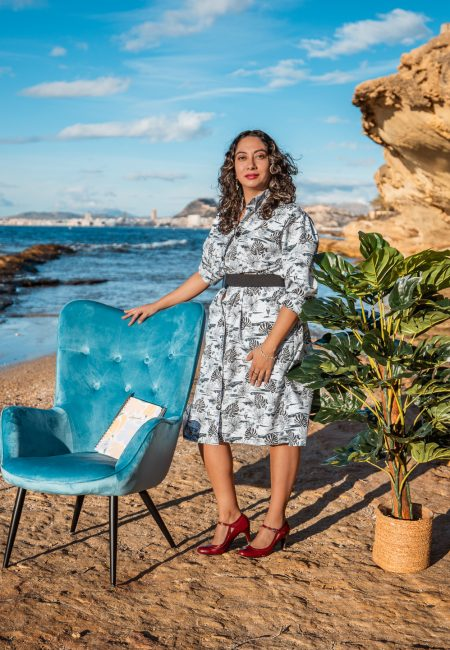

De dentro hacia fuera: mi viaje para estar al servicio de la vida.
El diseño ha formado parte de mi vida desde muy pequeña. Disfrutaba haciendo manualidades, jugando con Legos y creando cosas nuevas. Descubrí que eso es, por definición, diseñar: traer al mundo físico aquello que imaginas en tu mente.
Nací en Colombia, un país de contrastes donde aprendí el valor de la perseverancia, el amor por la familia y el respeto. Ese espíritu aventurero me llevó a trabajar desde la selva amazónica hasta cruzar el océano y radicarme en España.
El Mediterráneo me recibió con los brazos abiertos. Aquí me especialicé en el diseño de cocinas a medida y me acerqué al mundo de las reformas. Escuchar a un cliente decir "voy a reformar mi casa" y ser la persona encargada de hacerlo realidad es un privilegio inexplicable.
Esta es nuestra filosofía. Antes de exteriorizar resultados, debemos viajar hacia nuestro interior. Desde esa realidad co-creamos un proyecto realizable, midiendo capacidades y sueños, sin perder nunca nuestra paz mental ni nuestra salud emocional.

Acompañar a todas las personas que desean hacer reformas en sus espacios o en su vida personal, generando planes realistas, transparentes y aterrizados para obtener los mejores resultados en un tiempo determinado.
Ser una empresa de referencia en el mundo de las reformas y la mentorización. Buscamos crear dinámicas nuevas y soluciones funcionales sin dejar de lado el factor humano y la salud emocional que toda reforma implica.
De Colombia a España, nutriéndome del diseño nórdico en Islandia y el glamour de París y Milán para traerte lo mejor.
ESNECA Business School (España)
Universidad EAN (Colombia)
Universidad Nacional de Colombia
Universidad Nacional de Colombia